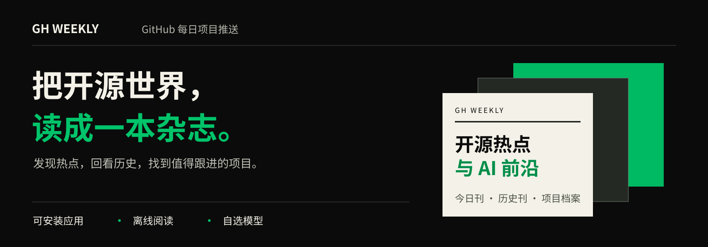
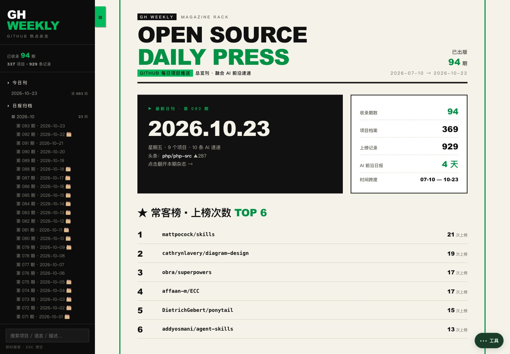
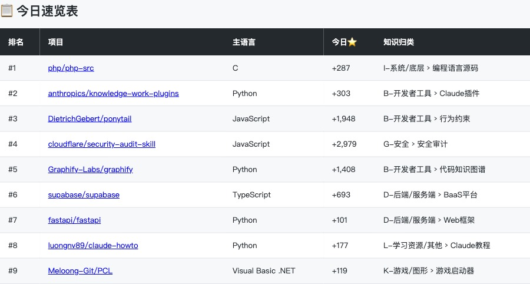
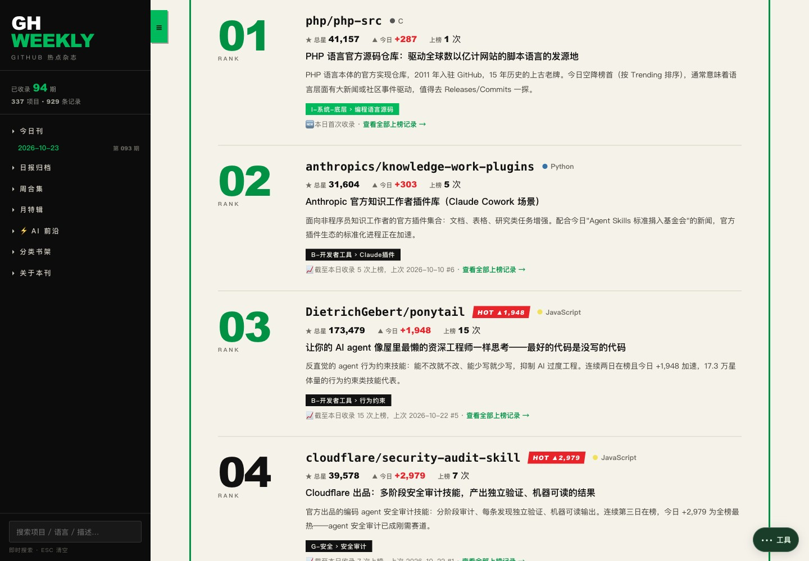
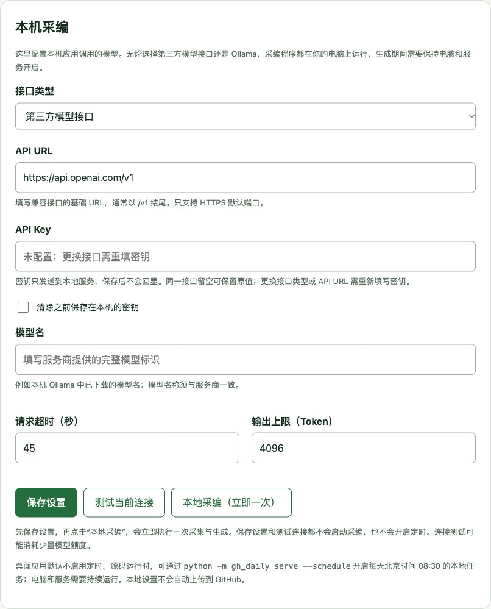

先看今天发生了什么
从风向摘要和项目卡片入手，了解用途，再追到仓库与来源。

真实应用界面 · 点击图片可查看原图

从风向摘要和项目卡片入手，了解用途，再追到仓库与来源。
全文搜索与分类档案相互连接，项目还有自己的上榜时间线。
安装成独立应用，PWA 缓存完成后可以离线阅读；桌面包双击即启动独立窗口。
排名、项目名、主语言和当日新增星数并排展示，快速找到值得继续阅读的方向。
2026-10-23 实际返回 9 个项目，按真实结果收录。

项目卡片把简介、适用方向、主语言、总星和当期新增放在同一处。先看懂，再决定是否深入。
AI 前沿速递附上来源链接，与开源热点一同阅读。

每个项目可以回看首次与最近收录时间、历次上榜名次和观测星数，让一次发现有了后续。
日、周、月按各自周期浏览；历史快照保留时间与来源，缺失数据明确标注。

本地首次为空白，不带作者历史，也不默认同步。
首次成功生成自己的日报就是第 001 期，之后逐期累计，关闭或重启不会重置。没有 Key 也能先打开应用与设置。
想生成内容，可以接入第三方兼容接口，填写 API URL、API Key 和模型名，也可以选择本机 Ollama。已有具备相应能力的 AI 工具，也能在自己的工作区直接采编，不必另配项目 Key。
本地资料和密钥分别保存在用户目录。看作者每日整理的内容，直接打开在线网址即可。
配图展示本地模型设置；模型接口按需选择。
查看模型配置教程
直接阅读作者发布的内容，维护自己的杂志，或交给已经在用的 AI 工具采编。

电脑关闭后能不能生成，取决于任务在哪里运行。本机任务需要电脑开机；GitHub Actions 会启动云端临时电脑运行项目。API Key 只负责调用模型，不负责运行项目。
每日内容在采编成功并发布后更新，不是持续实时抓取。默认采编计划为北京时间 08:30，GitHub 调度可能延迟。已有 AI 工具是否支持云端调度与仓库读写，需要核实其具体运行环境。
无需账号或模型配置。看公共杂志已发布内容与完整历史；也可安装 PWA，缓存完成后离线阅读。
进入在线杂志 →从空白工作区生成自己的第 001 期，资料持久累计。Releases 按平台选择文件，源码运行需要 Python 3.11+。
查看下载与版本说明 →先用 python -m gh_daily workspace 找到自己的本地工作区，再让具备相应能力的工具按规范采编。
PWA 独立窗口没有地址栏、标签页和书签栏，也提供“全屏阅读”。本地地址安装的 PWA 图标不会启动 Python 服务，桌面安装包的启动方式见对应版本说明。
查看 GitHub 项目安装与使用教程排名与星数来自实际采集，AI 归纳引用已采集的来源。补档保留快照标识，历史数据按观测时间理解；资料不足时允许少报。
文中实拍截图摄于 2026-10-23，用于展示公共网站功能。本地新刊从空白开始，图中的刊期、项目和星数是公共历史样例。
已验证：在线网站部署、Mac 桌面空白首启、PWA 安装及离线冷启动、本轮 Python 回归、三套 JavaScript 回归，以及缓存与隐私规则检查。
待验证：Windows 实机、真实模型服务与每日采编的 GitHub Actions 云端运行。
查看完整验收记录